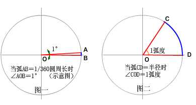

GIS
Resolution and Scale
地理现象和地理要素的表达通常是多尺度的，尺度表示了地物的综合程度和位置精度，衡量尺度的概念一般用分辨率或比例尺。
一、分辨率
在GIS中所提到的分辨率，也称地面分辨率（Ground Resolution）或空间分辨率（Spatial Resolution），
表示一个像素（pixel）代表的地面实际距离。
以谷歌地图为例：在缩放级别为 1 时，图片大小为4个 256*256 的图片，
那么赤道上的空间分辨率为：地球赤道周长（实地距离）除以256*2（像素大小）。
其他纬度上的分辨率则为：纬度圈长度/512。
因此可以看出，分辨率取决于两个参数：纬度和缩放级别。
缩放级别决定了像素的多少，纬度决定了地面距离的长短。
因此谷歌地图某视图下的分辨率计算公式为（单位：米/像素）：
F(X,Y)：地图分辨率；
X：纬度值；
Y：缩放级别；
R：常量 6378137，表示地球半径，单位：米。
二、比例尺
比例尺通常以比率(如 1:10000 )来表示，表示图上距离与实地距离之比。
例如 1:10000 表示图上 1cm 代表实际距离 10000cm，即100米。
由于比例尺起源较早，通常用（纸质）图上的距离衡量实际距离；
而分辨率则通常用设备屏幕上的距离来衡量实际距离。
而同一个地图视图，尺度是唯一的，比例尺和分辨率只不过是两种表示方法，
因此它们是一一对应的。 比例尺与分辨率之间的换算公式如下：
Scale：地图比例尺；
Resolution：地图分辨率；
PPI：每英寸的像素点数。

其中 PPI，即 Pixel per Inch，即每英寸的像素点数（在不混淆情况下，也有用 DPI 来表示该参数）；
0.0254 为英寸和米的转换常数。1英寸(in)=0.0254米(m)
由于比例尺和分辨率一一对应，因此比例尺也取决于纬度和缩放级别两个参数，并且还与 PPI 相关。
仍旧以谷歌地图为例：
当地图处于全幅状态时，上下移动地图，使得地图中心线处纬度发生变化，因此比例尺随之变化；
同理，当地图处于不同的缩放级别时，地图比例尺同样也会发生变化。
Degree / Radian
“弧度”和“度”是度量角大小的两种不同的单位。就像“米”和“市尺”是度量长度大小的两种不同的单位一样。
一、度的定义
两条射线从圆心向圆周射出，形成一个夹角和夹角正对的一段弧。
当这段弧长正好等于圆周长的360分之一时，两条射线的夹角的大小为1度。
二、弧度的定义
两条射线从圆心向圆周射出，形成一个夹角和夹角正对的一段弧。
当这段弧长正好等于圆的半径时，两条射线的夹角大小为1弧度。

三、度跟弧度之间的换算
1弧度＝180°/π （≈57.3°）
1度＝π/180 弧度